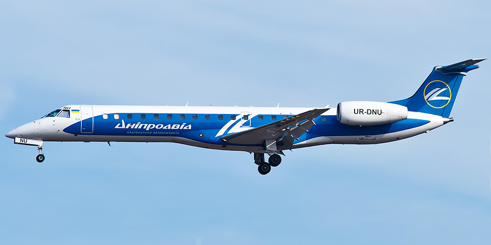
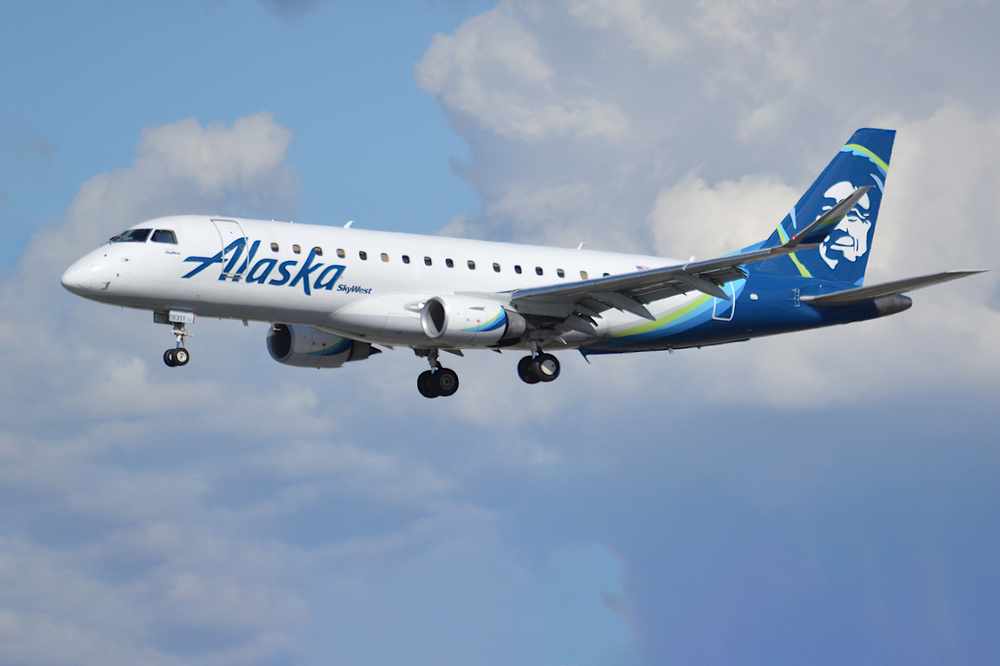
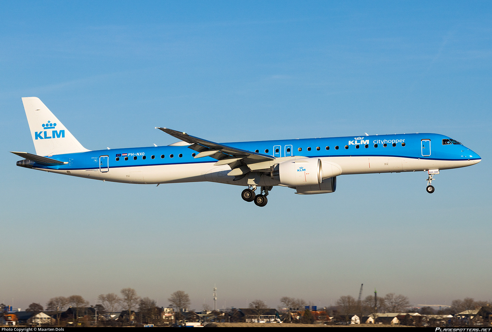
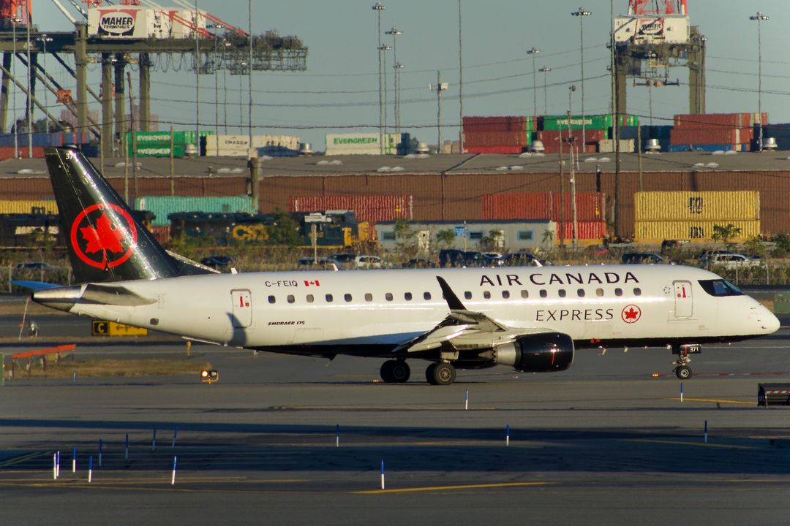
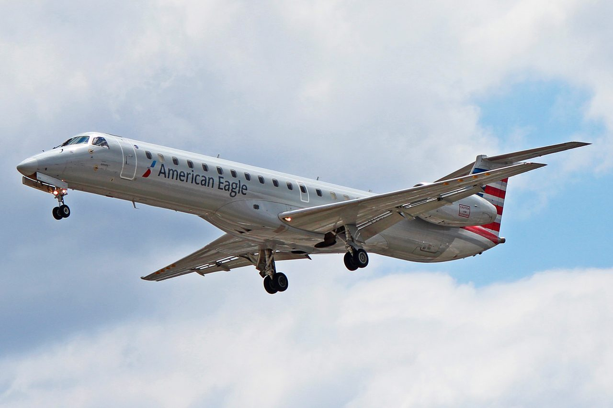
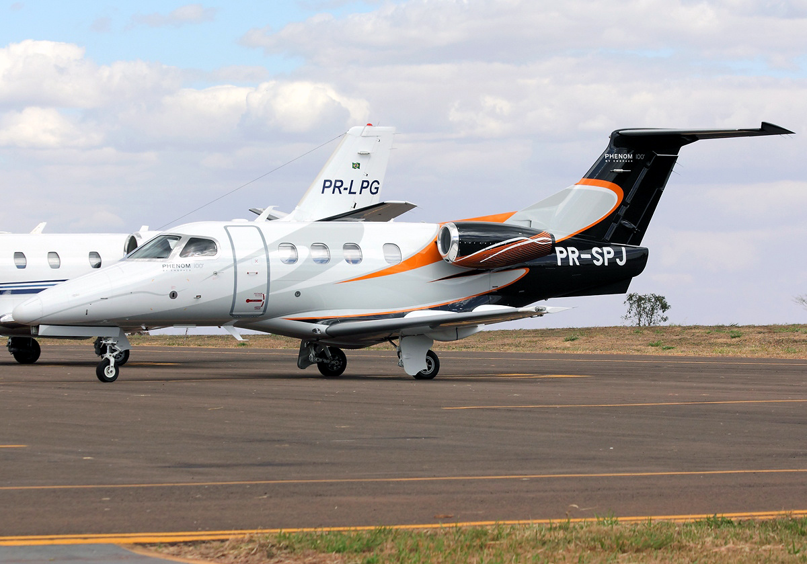

The Embraer family
the embraer family is a regional jet family mainly composed of 3 an 4 abreast seat aircraft the passenger seat capcity typically ranges fron 33 to 124 seats and is made by the brazillian manufacturer embrear manyof its models include the erj 110 banderante the embrear 120 brasillia the emberear 130 the erj 145 and the e-jet series

the founding of embrear
Embraer was founded in 1969 by the Brazilian government in São José dos Campos in order to build and design planes domestically without having to import from other countries. This monumental effort relied heavily on a powerful local ecosystem fueled by two key institutions in the city: the Instituto Tecnológico de Aeronáutica (ITA), which was created to train highly skilled engineering personnel, and the Centro Técnico de Aeronáutica (CTA), established to conduct cutting-edge aerospace development and research. Their main first breakthrough was the EMB 110 Bandeirante, a rugged twin-turboprop light transport aircraft that was made a massive success under the brilliant leadership of Embraer's first president, Ozires Silva. With this triumph, Embraer was firmly established as a premier state-owned manufacturer. Crucially, the company did not just build airplanes; it established entirely new domestic supply chains, pioneered advanced manufacturing techniques, and developed rigorous airworthiness certification processes from scratch. By absorbing a steady stream of brilliant, young graduates from ITA and CTA, the company rapidly filled its talent gap. However, because these early days were marked by minimal infrastructure and virtually zero industrial experience, Embraer heavily depended on strategic licensing agreements with established foreign companies. A prime example was their partnership with Piper Aircraft, which allowed Embraer to assemble light utility planes locally, mastering global quality standards and factory-floor logistics in the process. This clever combination of domestic academic brilliance and international industrial partnerships laid the groundwork for Embraer's future evolution into a global aerospace
early development
The early engineering culture at Embraer was defined by a brilliant mix of local resourcefulness and strict, self-taught manufacturing discipline. Led by visionary figures like Ozires Silva and French designer Max Holste—who brought crucial aerodynamic expertise to the IPD (Instituto de Pesquisas e Desenvolvimento)—these pioneer designers had to build a world-class aerospace industry from scratch. Because Brazil lacked an established aviation supply chain in the late 1960s, early technicians had to master complex manufacturing techniques manually. They relied heavily on chemical milling (using chemical baths to etch away excess metal and lighten aluminum sheets) and precision metal bonding, creating incredibly lightweight yet structurally robust fuselages capable of enduring the intense vibrations of unpaved Amazonian runways. Rather than attempting to build everything in-house, their core strategy focused on "system integration"—designing the airframe themselves while strategically sourcing complex components, like Canadian Pratt & Whitney turboprop engines and American avionics, a pragmatic manufacturing philosophy that allowed Embraer to rapidly match international quality standards on a limited budget. The rise of Embraer is anchored by three critical aircraft evolutions that transformed it from a niche government project into a global aerospace giant. It all started with the EMB 110 Bandeirante, a rugged twin-turboprop that made its first flight in 1968; engineered specifically to connect Brazil's vast, remote interior via unpaved runways, its overwhelming necessity forced the Brazilian government to officially found Embraer in 1969 just to mass-produce it. Building on the manufacturing discipline learned from the Bandeirante, Embraer introduced its second major evolution in 1983: the EMB 120 Brasília, a highly successful 30-passenger pressurized turboprop that allowed the company to break into the hyper-competitive U.S. and European regional airline markets, proving that a Brazilian manufacturer could meet strict international commercial standards. However, the true survival and ultimate modernization of the company hinged on its third great leap, the ERJ 145 family, introduced in the mid-1990s; by stretching the Brasília's fuselage and replacing the props with jet engines, Embraer pioneered the "regional jet" boom, a masterstroke that saved the newly privatized company from imminent bankruptcy and firmly established it as the world's premier builder of sub-100-seat commercial aircraft. securing thir spot in the market
alliances, and partner ships
- Global Aerospace Supplier Collaborations (1980s–1990s) As Embraer moved into regional airliners, it partnered with major international aerospace suppliers for engines, avionics, and certification support. These collaborations weren’t with other aircraft manufacturers, but they were essential: they helped Embraer meet FAA and European standards and allowed it to compete globally with the EMB‑120 and ERJ jets.
- Risk‑Sharing Development Partners (1994–2010) After privatization, Embraer formed risk‑sharing partnerships with global aerospace companies to develop the ERJ and E‑Jet families. These partners co‑designed major systems and shared development costs, giving Embraer the financial and technical muscle to grow into the world’s third‑largest aircraft maker without merging with anyone else.
- Boeing–Embraer Joint Venture Attempt (2017–2020) Embraer’s closest partnership with another aircraft manufacturer was its attempted joint venture with Boeing, which would have placed Embraer’s commercial division under Boeing control. The deal was meant to counter Airbus’s takeover of the CSeries, but Boeing withdrew in 2020, and the partnership collapsed before it became operational.
- Modern Industrial & Defense Partnerships (2010s–Today) Today, Embraer partners globally through its C‑390 Millennium program and its subsidiaries like OGMA and Eve Air Mobility. These collaborations involve co‑production, maintenance ecosystems, and next‑generation aircraft development, helping Embraer expand internationally even without formal alliances with other major manufacturers.
product exspansion
in the mid 1990s embrear made a change to pursue smaller regional jets instead of large military aircraft which made up of most of their production lines at the times and eventually they even chse bigger regional jets and smaller private jets such as the embrear preator and the embrear legacy series these non military jets included the erj series of course and eventually the creation of the E2 jets and beyond
Passenger Aircraft models
embrear 175

The Embraer E175 is a 76–88 seat regional jet designed for short‑ to mid‑range routes, offering a quiet, comfortable 2‑2 cabin and strong fuel‑efficient performance. It typically flies up to about 2,200 nm, making it ideal for regional airlines needing mainline‑style comfort and flexibility.
embrear 190
.avif)
The Embraer E190 (E1) is a 98–114 seat regional jet offering a spacious 2‑2 cabin, smooth handling, and strong efficiency for short‑ to medium‑haul routes. It typically flies around 2,400 nm, making it a versatile choice for airlines needing more capacity than the smaller E‑Jets without moving to full narrow‑body aircraft.
embrear 195

The Embraer E195 is the largest jet in the E‑Jet family, seating 100–124 passengers with a comfortable 2‑2 cabin and smooth, efficient performance for short‑ to medium‑haul routes. It typically offers a range of about 2,200 nm, making it a popular choice for high‑demand regional and domestic flights.
embrear 170

The Embraer E170 is a 70–78 seat regional jet designed to offer mainline-airliner comfort with a wider 2‑2 cabin and modern fly‑by‑wire controls. It serves short‑ to medium‑haul routes efficiently with a range of about 2,150 nm and smooth handling characteristics.
embrear 145

The Embraer ERJ‑145 is a 50‑seat regional jet designed for short‑ to medium‑haul routes, commonly used to link smaller cities with major airline hubs. It has a range of about 1,550 nautical miles, and its fuselage is about 98 feet long with a wingspan of 66 feet, making it compact and efficient for regional operations.
embrear 140
The Embraer ERJ‑140 is a 44‑seat regional jet designed for short haul routes, commonly used to link smaller cities with major airline hubs. It has a range of about 1,650 nautical miles, and its fuselage is about 93 feet long with a wingspan of 66 feet with the same wings as the 145, being made for thinner routes involving the need for faster flights and jet like needs
embrear 135

The Embraer ERJ‑135 is a 37‑seat regional jet again smaller than the other 2 versions designed for small capacity, commonly used by airines with thinner capacity It has a range of about 1,650 nautical miles, and its fuselage is about 86 feet long
embrear 120 brasillia

The Embraer 120 brasillia is a 30 seater turboprop commuter airliner being developed in 1974 it is 65 ft long and with a wingspan of 64 ft with an MTOW of 25,353 Lbs with a range of 940NM and is powered by 2 Pratt & Whitney Canada PW118s
embrear 110

The Embraer 110 bandeirante was the fist plane made by enbrear to enter commercial service it was a small plane with its main priority being connecting the cities of south america separated with 1000s of miles of dense forest from the nearest town it is 49 ft long and with w wing span of 50ft
Private Aircraft models
Embraer Phenom 100

The Embraer Phenom 100 is a light jet designed for short to medium-range flights, commonly used for business and private aviation. It has a range of about 1,800 nautical miles, and its fuselage is about 44 feet long with a wingspan of 36 feet.
Embraer Phenom 300

The Embraer Phenom 300 is a mid-size jet designed for longer-range flights, offering more comfort and range than the Phenom 100. It has a range of about 2,500 nautical miles, and its fuselage is about 54 feet long with a wingspan of 46 feet.
Embraer Legacy 450

The Embraer Legacy 450 is a smaller jet designed for long-range business travel, offering exceptional comfort and performance. It has a range of about 3,500 nautical miles, and its fuselage is about 64 feet long with a wingspan of 58 feet.
Embraer Legacy 500

Embraer Legacy 600

Embraer Legacy 650

.
Embraer Preator 600

.
Embraer Preator 500

.